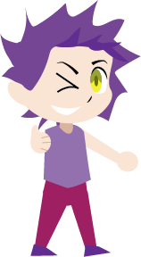

Jester
"You only live once"
Jesters are the fun folk who use humor and wild attitudes to give an impression to the world. Their drive is to live in the moment with enjoyment and lighten others. As a result, they bring joy to the audience, making them very likable to children and adults. Jesters do fear being bored or becoming boring, which often doesn't make them good for serious situations.
Also known as:
- The Fool
- Joker
- Comedian
- Class Clown
- Performer
Qualities
- Sense of Fun
- Likeability
- Joyfulness
Flaws
- Unreliability
- Frivolousness
- Selfishness